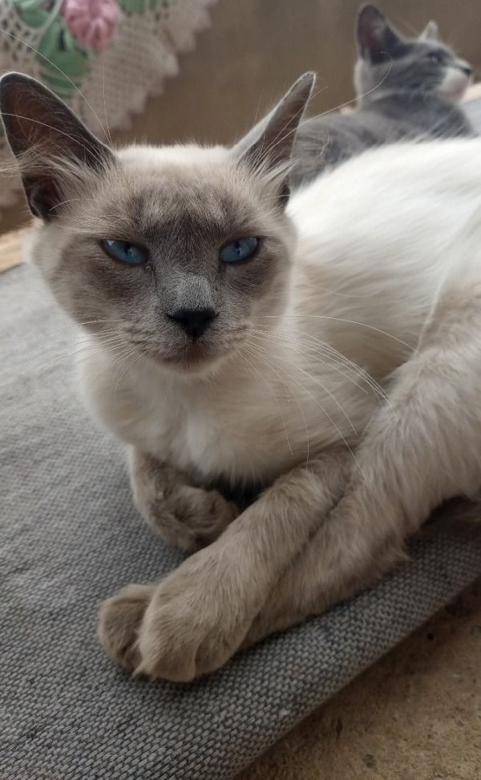

Adote um Amigo Peludo
Aqui no "Patas Amigas", acreditamos que todos os animais merecem uma segunda chance. Confira abaixo os cães e gatos disponíveis para adoção:
Cães
- Tico - 3 anos
- Abobrinha - 2 meses
- Simba, Nala, Timão e Pumba - 6 meses
Gatos
- Lilica - 2 anos e Pão de Queijo - 3 meses
-  Wanda - 4 anos
- Neguinha - 2 anos